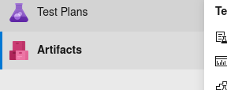
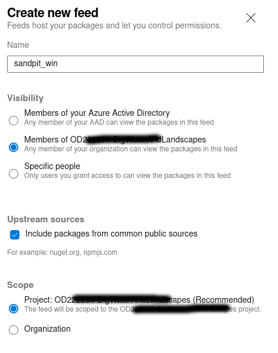
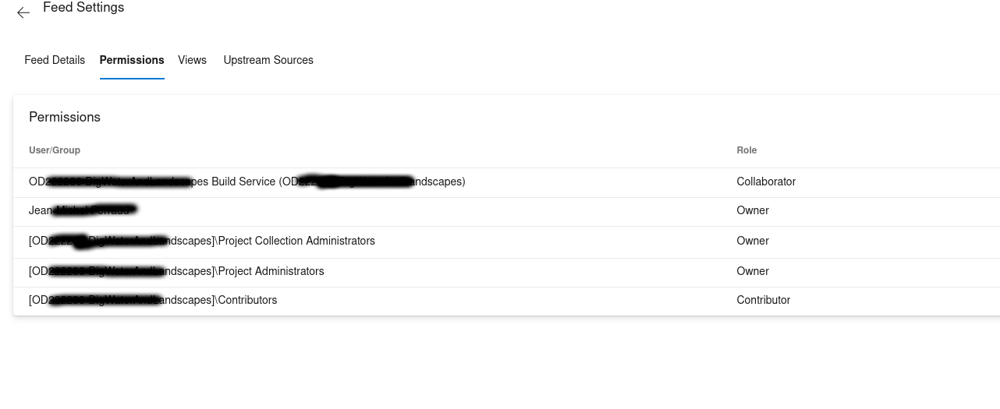
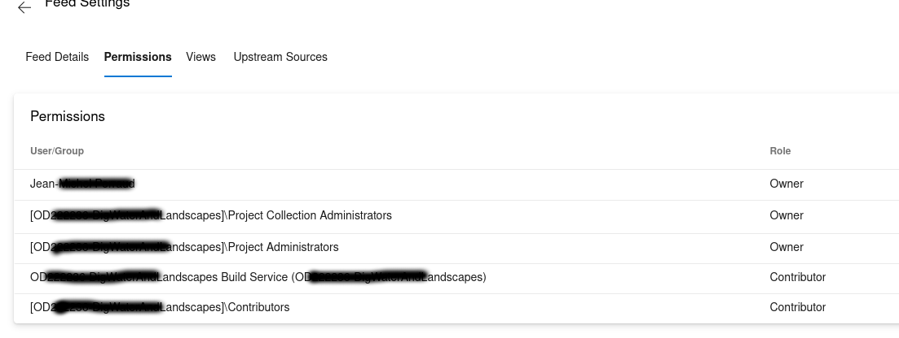

Foreword: You’ll find a minimal working example towards the end of the post, if you want to skip the rants and googling tribulations
How was your day?
Today, Azure Devops took five-ish hours of my life I’ll never get back. Not for the first time. I’ll try to keep expletive out of this post.
I’ve been using Azure Devops for about a year to set up build and deployment pipelines. Not on a regular basis, but several instances. This week I am trying to finalise a new build pipeline. And I feel like venting some frustration. It may make some other sufferers feel less alone. Earlier this week I had a training webinar on taking on board UX (user experience) techniques in our work, implicitely for the delivery of digital products. This adds irony to my resentment against Microsoft for landing Azure Devops where it stands.
I don’t have the time or energy to capture in compelling details all the frustrations or puzzlements in this post. After another week more than I would have liked to spend on it, Azure Devops feels obtuse, alienating, unpleasant. I have not tried many other similar offering recently, so I don’t know if the grass is greener over the fence. And I doubt it.
Today’s tribulations.
Getting a pipeline to publish a package in a project feed
I was putting the final step of a long-running build pipeline (C++, R), to publish an artifact using the task UniversalPackages@0 in the azure-pipeline.yml. And I had managed to do that in another pipeline some months ago. After bumping into an issue of my making (need to create a new feed in the project to host these artifacts), I end up with the glorious error message:
{"@t":"2022-07-26T10:22:42.4886223Z","@m":"An error occurred on the service. User 'aaaaaaaa-2efe-46ec-b780-ffffffffffff' lacks permission to complete this action. You need to have 'AddPackage'.","@i":"bbbbbbbb","@l":"Error","SourceContext":"ArtifactTool.Program","UtcTimestamp":"2022-07-26 10:22:42.488Z"}“You”? Who? Me? Who is user ‘aaaaaaaa-2efe-46ec-b780-ffffffffffff’? Is it me? I am admin in this organisation, and owner of the pipeline.
And on with the wild goose chase.
First port of call, compare every setting to the other, working pipeline. I notice that the group Project Collection Build Service (my-az-organisation) is not present with a contributor Role. Fix that.
Nope, still the same. (Later, Looking back, I must have missed something in the feed permission list (Collaborator vs. Contributor role))
Help! Google.
This StackOverflow thread has hints about needing to add a Build Service with a Contributor role. There are also references at needing to go to an “…” button to change an allowed scope, but as of 2022 the user interface has changed. Other posts such as this and this suggest there is no shortage of confusion besides myself.
In the Microsoft documentation maze Manage build service account permissions is the wrong place to look at. Configure feed settings is the right place, but despite not being incorrect it is too generic and unhelpful for many users who just want a specific, working recipe for their use case.
In the end I managed to find a recipe after setting a minimal example from scratch.
A minimal, working example
Since at least the user interface has changed since the 2019 Stack Overflow posts:
Caution: these screen captures below are taken from an Azure Devops organisation where the name of the single project in that organisation is the same as the organisation. These are blacked out, but you can see it partly. This stems from my employer’s policies. Not something I can do anything about, but not the best context for explanation. In your case your organisation name and project name may differ, and probably should to avoid confusion.
First, create the new feed in the artifact section. If you already have a feed, I am not sure.

Create this new feed, setting the scope to the project, which is recommended anyway. This is important for subsequent permission settings: if you choose organisation, this example may not pan out. The visibility option may not matter for this example, but am not sure.

By default, the permission list created for the new feed is as below. Note that the [project_name] Build Service ([organisation_name]) user or group has the role Collaborator by default. This may be the key stumbling block users trip over.

As I write, you cannot change the role; you have to remove the [project_name] Build Service ([organisation_name]) user or group and add it again with the Contributor role.

With that in place, the following pipeline works:
trigger:
- main
resources:
- repo: self
variables:
tag: '$(Build.BuildId)'
# to get a custom '$(Build.BuildNumber)', and 'r' is a counter reset to 1 every change of the major/minor versions
name: '0.1.$(Rev:r)'
stages:
- stage: Build
displayName: Build packages
jobs:
- job: Build
displayName: Build packages
pool:
vmImage: windows-2019
steps:
- checkout: self
- script: |
mkdir $(Build.ArtifactStagingDirectory)\release
cd $(Build.ArtifactStagingDirectory)\release
echo "test" > blah.txt
displayName: 'create mock artifact'
- task: UniversalPackages@0
displayName: Publish output bundle
inputs:
command: publish
publishDirectory: '$(Build.ArtifactStagingDirectory)\release'
vstsFeedPublish: 'OD222236-DigWaterAndLandscapes/sandpit_win'
vstsFeedPackagePublish: 'sandpit_win'
versionOption: custom
versionPublish: '$(Build.BuildNumber)'
packagePublishDescription: 'Test package publication'Parting words
This was but one illustration of the inadequate UX with Azure Devops. Looking back on this one, this is a relatively simple and common use case, and after the fact I feel I should have second-guessed the settings. But I and visibly many others have been derailed and confused by the process, trying to find a didactic example to work from by similarity. It seem that the Microsoft documentation draws you into having to absorb a web of overly complicated and abstract concepts that are overwhelming unless you are a full-time devops.